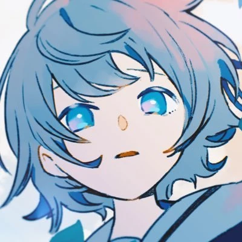

Temas
Introducción
 Seguramente has escuchado algún tipo de rock antes, ya que el rock se atravesará en nuestra vida al menos alguna vez, es uno de los géneros preferidos de muchos y como sabemos, existen un montón subgéneros de este tipo de música como el rock progresivo, pop rock, o rock alternativo, pero hay uno en particular que es bastante curioso el cual es el J-Rock . Este género lo solemos encontrar en los openings de los animes pero hay una banda en especial de la que quiero hablar los cuales son conocidos como TUYU(ツユ), hace poco esta banda logro llegar 1,26 millones de suscriptores de en YouTube y 591,502 mil oyentes mensuales en Spotify por lo que podemos suponer que esta banda ha de tener algo interesante, es por eso que te quiero explicar ¿Porqué deberías escuchar a TUYU(ツユ).?
Seguramente has escuchado algún tipo de rock antes, ya que el rock se atravesará en nuestra vida al menos alguna vez, es uno de los géneros preferidos de muchos y como sabemos, existen un montón subgéneros de este tipo de música como el rock progresivo, pop rock, o rock alternativo, pero hay uno en particular que es bastante curioso el cual es el J-Rock . Este género lo solemos encontrar en los openings de los animes pero hay una banda en especial de la que quiero hablar los cuales son conocidos como TUYU(ツユ), hace poco esta banda logro llegar 1,26 millones de suscriptores de en YouTube y 591,502 mil oyentes mensuales en Spotify por lo que podemos suponer que esta banda ha de tener algo interesante, es por eso que te quiero explicar ¿Porqué deberías escuchar a TUYU(ツユ).?
¿Quiénes son?
 Dentro de esta banda se encuentra PUSU, él es el compositor de todas las canciones de TUYU, anteriormente intento trabajar con vocaloid, creando su proyecto llamado “Heisei Project(ヘイセイプロジェクト)”, el cual gozó de una reputación moderada, pero, aun así, llego a estar dentro álbumes recopilatorios de “Exit Tunes”, hasta que en 2019 sacó una canción llamada “Heisei Sayonara Bye Bye (ヘイセイサヨナラバイバイ)” la cual fue un cierre a esta saga de canciones, un mes después, renombró su canal a TSUYU y el 12 de junio de 2019 sacó su primera canción nombrada “Después de todo llueve(やっぱり雨は降るんだね)”, de aquí es cuando la carrera de TUYU empezó.
Música
Está claro que hay proyectos musicales todo el tiempo, pero lo que diferencia a TUYU por sobre los demás, es la producción y composición de la música, en mi caso, la música electrónica era lo que escuchaba todos los días y dentro de este género lo más importante es la producción, no tanto lo complejo que es la composición, con esto no quiero decir que entre más compleja una canción será mejor, lo que quiero decir es que el uso de acordes no tan comunes es lo que destaca a TUYU, acordes tales como con 7ma, con 9na son la clave del sonido característico de esta banda. También no hay que olvidar la increíble habilidad de los músicos que componen esta banda.
Como el pianista miro
ツユの新曲『ナミカレ』のピアノソロを弾いてみました🎹☔️ pic.twitter.com/1OVJyT9dx5
— miro ✪ ミロ (@mironuko) April 1, 2020La vocalista Rei
お久しぶりです、礼衣です🍞
— ツユ (@TUYU_official) May 10, 2020
ぷす(@Pusu_kun)から#うたつなぎ
好きな曲を歌いました。
よろしくお願いします🌧 pic.twitter.com/MFrM9MHHqiY el guitarrista Pusu
La habilidad de estas personas hace que las canciones de TUYU sean casi imposibles de tocar por cualquier principiante, o al menos es todo un reto lograr tocarlas correctamente y algo que me llama mucho la atención, es la forma que podemos llegar a sentir lo que quiere transmitir con sus canciones, un recurso que usa bastante TUYU, es el dejar silencios antes del coro para que entren con más fuerza, aparte, otro de los recursos clave de sus canciones es el subir de calve al casi final de la canción, para resaltar más el ultimo verso de la canción y todo esto siempre viene con una queja social de parte de PUSU
Letras
Está claro que en todas las canciones hay algo que está sucediendo, lo vemos gracias a las imágenes y a las letras que aparecen cuando está sonando la canción, y aquí es donde la mayor parte de gente vuelve una y otra vez a escuchar la música de TUYU dentro de las canciones siempre viene algo por lo que la mayoría de nosotros habremos pasado alguna vez como por ejemplo la canción de Niña Comparada(くらべられっ子), donde habla de cómo se odia a sí misma por no ser como los demás quieren que llegue a ser o el ejemplo de ¿Qué pasaría si no fuera un esclavo?(奴隷じゃないなら何ですか？) Donde se queja de como presionan a las personas a escoger que es lo que quieren hacer de su vida, haciendo alusión a ser como una marioneta que no puede realmente influir en la decisión que tome, o incluso el ejemplo de Adiós al rock y a ti(ロックな君とはお別れだ) donde habla de cómo de frustrante es el esforzarte al máximo y aun así no llegar a triunfar como uno quisiera, y por culpa de ello, querer abandonar todos sus sueños, lo que quiero decir que cada canción de TUYU habla de temas bastante interesantes y bastante fuertes, que no hablan del tema nada suave como, voy a tomar el autobús o su secuela Si hubiera un punto final, que directamente hablan del suicidio, les recomiendo escucharla para entender a lo que me refiero
今
Me pregunto qué tanto dolor hay que sentir para llegar a pensar sí vivir todavía es una opción, es un tema que toca la canción “Atrapada en el pasado”(過去に囚われている), va narrando la historia de una chica que al final de todo, recurre a lo peor, la forma de composición, la interpretación de la cantante, los visuales y la letra, se fusionan de tal manera que te hace sentir lo que el compositor sentía en ese momento, sobre todo, cómo evoluciona la canción hasta el final, es una canción con un mensaje muy fuerte y que al final nos deja a interpretación de cada uno, si la chica del video decidió o no dejar de vivir, es un mensaje bastante fuerte el que deja, ya que no hay resolución, pero en parte recuerda que así es la vida y que a veces la pasaremos realmente mal, la queja de PUSU aquí es, de cómo la mayoría de las personas solemos tratar a la depresión, incluso se nota en la letra donde la chica se sigue presionando para ser, como lo que llego a ser alguna vez, les recomiendo escucharla, tiene subtítulos al español
Conclusión
Con todo esto, la verdad quisiera que le dieras una prueba a la banda, han ido creciendo durante ya bastante rato y estoy feliz de poder haberlos conocido desde casi el inicio, cada integrante aporta una notoriedad en la banda, los increíbles arreglos de piano de MIRO, las increíbles interpretaciones de las canciones de Rei, y las increíbles composiciones de PUSU, cada uno aporta su granito de arena para que esta banda suene de una manera y atrás de ellos hay miles de personas que los apoyan todos los días, por eso digo que esta banda merece mucho la pena, incluso cuando tu tipo de música no es este específicamente